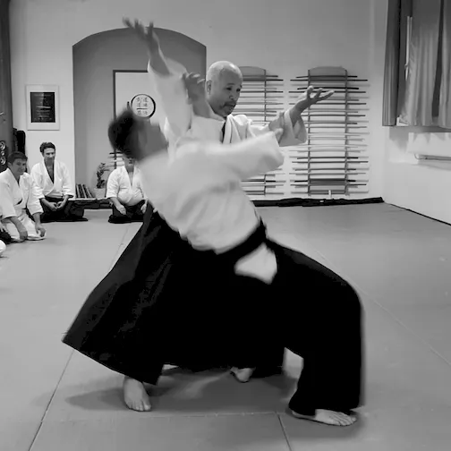

Az AIKIDO önmagunk mélyebb megismerésének eszköze, az ember harmonikus fejlődésének az útja.
Az AIKIDO szót három írásjel alkotja
合 AI
Az AI jelöli az egységet, az egyesítő cselekvést, az egyesülést.
気 KI
A KI többé-kevésbé lefordíthatatlan: ez az írásjel a rizsfőzés során felszálló gőzt jelképezi; így a levegőhöz, a gázhoz, a légzéshez, a megnyilvánuláshoz, az élő tevékenységhez, az életerőhöz kapcsolódik. A Ki lélekzetnek, életenergiának felel meg.
道 DO
A DO két részből álló, egy fejet, valamint az előre haladó mozgást ábrázoló írásjel mely egy járás közben az útját fürkésző emberként értelmezhető. Ezt általában ösvénynek, útnak, szakértelemnek, az emberiség szolgálatában végrehajtott feladatnak fordítják.
Ennek értelmében, az AIKIDO az energiák egyesítésének vagy egyesülésének útja.
Az AIKIDO mint harci tan
Az Aikido a szamurájok által több évszázadon keresztül gyakorolt harci művészetek szintéziseként, a XXsz. folyamán Morihei Ueshiba (1883-1969) Nagymester által megalkotott japán harci tan, amely a BUDO - szó szerint a harcos, vagy a harc útja - részét képezi. Ide sorolják a japán Harci Művészetek minden modern megjelenési formáját: a JUDO-t, a KARATE-DO-t, a KENDO-t (a kard útja) az IAIDO-t (a kard kirántásának útja) a KYUDOt (az íj útja), stb.
Morihei Ueshiba (1883-1969)
Azzal együtt, hogy az Aikido gyakorlatilag harci technikákból származik, alapítójának elképzelése többek között egyharci szellemben történő, az egyéni lehetőségeket nem kizáró, az ember belső fejlődésének elősegítésére hivatott eszköz megteremtése volt (ami nem feltétlenül mondható el az igen komoly fizikai erőnlétet megkövetelő, ténylegesen harci művészetekről).
Az Alapító ezt így fogalmazta meg: "az Aikido célja nem a másik ember, hanem önmagunk hibáinak kijavítása. Ez pedig ne az egyén fizikai és spirituális pusztítását, inkább fejlesztését jelentse." Az Aikido gyakorlása így lehetővé válik bármilyen korú, bármilyen fizikai adottságokkal rendelkező ember részére; a gyakorlás során kifejtett erő intenzitása változhat a sportosnak mondott, magas szinten végzett intenzív gyakorlástól a szabadidős tevékenységig.
Az AIKIDO technikája
Az Aikidonak sokféle gyakorlási formája létezik. Az Aikidot gyakorolhatják szabad kézzel vagy fegyverrel, egy vagy több, felfegyverzett vagy fegyvertelen ellenféllel szemben. Mindkét gyakorló lehet álló helyzetben vagy térdelő ülésben, illetve az egyik állhat, miközben a másik térdel. A támadás formái lehetnek megragadások vagy ütések. Az Aikido technikái dobásokból, és leszorításokból állnak. A különböző mozdulatok igen sokszor veszik igénybe a felső végtagok, a csukló, a könyök, a váll, valamint a gerincoszlop ízületeit. Az elhajított fél gyakran működik közre saját zuhanásában, hiszen a legtöbb esetben ez az egyetlen módja annak, hogy elkerülje az érintett ízület sérülését. Az Aikidokák gyakran használnak fegyvereket: fából készült botot, kardot, kést. Ezek az eszközök nagyban elősegítik a használatukból eredeztethető technikák megértését. A fegyverek szerves részét képezik a gyakorlásnak, mivel a velük végzett technikák az elsajátítandó szabadkezes technikák forrásai. Használatuk javítja a testtartást, finomítja a megfelelő támadási távolság kialakítását, a pontosságot, a koncentrációt és a központ fogalmának megértését, mely utóbbi igen fontos szerepet tölt be az Aikido gyakorlásában. Egészen röviden definiálva, a központ (centrum) tulajdonképpen egy stratégiai alapot képez, mely lehetővé teszi az Aikidokának, hogy a mozdulat középpontjában elhelyezkedve ellenőrzése alatt tarthassa ellenfelét. Nagyon fontos megemlíteni, hogy az Aikidoban nincsenek bevitt ütések rúgások, így nincs az ütésekkel járó fizikai stressz sem.
Az AIKIDO nem önvédelmi technika
A harci művészetek legtöbbször, mint önvédelmi technikák kerülnek bemutatásra. Az Aikido esetében ez nem igaz. Önvédelem esetén van egy támadó és egy megtámadott, az Aikido gyakorlata és szellemisége viszont alapjaiban megkérdőjelezi ezt a fajta kettősséget. Az Aikido célja definíciójából eredően az egyesítés, nem pedig a szétválasztás. Ráadásul az önvédelem fogalma a megtámadott passzív, illetve késleltetett reakcióját feltételezi a támadóhoz képest. Technikailag ennek pontosan az ellenkezőjét kell tenni, azaz ellenőrzés alá vonni a támadót, mielőtt az bármit is kezdeményezne.

A felnőtt AIKIDO gyakorlás megkezdése a TENJINCHI DOJO-ban
Iskolánk 2021-es kezdőkurzusa új koncepcióra épül. A heti kettő, három vagy akár négy alkalmas, 8-12 hetes periódus fokozatosan készíti elő az új gyakorlók fizikumát és figyelmét az AIKIDO rendszeres, sikeres és örömteli gyakorlására. Az előkészítő időszakban két óratípust ajánlunk az új gyakorlóknak:
AIKIDO MOZGÁSALAPOK és ALAPTECHNIKÁK
hétfő, szerda 19:30 - 20:30 *
Ezeken az órákon az AIKIDO alaptechnikáival, testtartásaival és alaplépéseivel, a legalapvetőbb kibillentésekkel, dobásokkal, gurulásokkal és esésekkel, valamint az alap leszorításokkal ismerkedik meg az új gyakorló. A gyakorlás egyedül és partnerrel is, legtöbbször a haladóbbakkal együtt történik. Az egy órás edzés után, a gyakorlók létszámától függően, lehetőség van további fél óra irányított egyéni gyakorlásra.
* Alternatív megoldásként csatlakozni lehet a kisebb létszámú délelőtti órákhoz is: kedd, csütörtök 8:30 - 10:00 (a foglalkozás egy adott részében a kezdők önálló feladatokat kapnak). Több műszakban dolgozóknak egyéni órarendet állítunk össze a reggeli és esti órákból.
RAJI UKEMI FITNESS
kedd, csütörtök 19:15 - 20:15
A RAJI UKEMI FITNESS a nemzetközi iskolánk által kifejlesztett új testgyakorlási forma. A különleges mozdulatok, a fokozatosság elve mentén, előkészítik az aikidóban elengedhetetlen földre eséseket, gördüléseket, és zuhanásokat, rendkívül hatékonyan fejlesztik a koordinációt és a testtudatosságot. Különös hangsúlyt helyezünk a törzs izomzatának megerősítésére, a gravitációs központ tudatosítására, és a törzs (csípő és súlyközpont) valamint a végtagok összehangolására. A gyakorlás partner nélkül történik. Kezdőknek erősen ajánlott, akár az első időszakban bevezetésként, csak ezek az órák hetente kétszer. Ez az összetett rendszer az alapos és fokozatos felkészülést, de a csoportba való dinamikus integrálódást is lehetővé teszi. Kevésbé sportos érdeklődők és idősebbek is bátran kipróbálhatják magukat. Önálló, az AIKIDO gyakorlásától független gyakorlását is javasoljuk. Bővebb ismertető a RAJI UKEMI FITNESS oldalon.
A fenti órákon túl, lehetőség van egyéni magánórákra is napközben.
Fizetési lehetőségek: Havi tagsági díj (csak AIKIDO): 15 000 Ft A kezdőkurzus díja egyösszegben (AIKIDO&RUF 3 hónap): 44 000 Ft RUF 10 alkalmas bérlet (2 hónapig érvényes): 20 000 Ft / alkalmanként: 2 500 Ft AJÁNDÉKKÁRTYA!
Érdeklődés és jelentkezés emailben vagy telefonon...